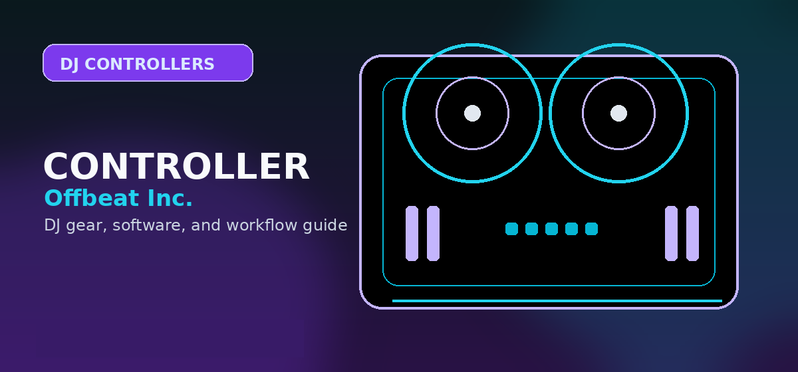

Can You DJ Without a Controller?
A beginner guide to learning DJ software, cue points, phrasing, and basic mixing before buying a controller.

A beginner guide to learning DJ software, cue points, phrasing, and basic mixing before buying a controller.
Can you start without a controller?
Yes. A controller is not required to understand song structure, phrasing, library organization, cue points, beatmatching concepts, or basic transitions. A controller becomes important when hand movement, headphone cueing, muscle memory, and performance confidence matter.
| Goal | Controller needed? | Best path |
|---|---|---|
| Learn song structure | No | Use free software, playlists, and phrase-counting practice. |
| Practice transitions | Helpful but not mandatory | Start with keyboard/mouse, then move to a controller quickly. |
| Record a polished mix | Strongly recommended | A controller makes cueing, EQ, and levels more natural. |
| Play a paid gig | Usually yes | Use reliable hardware, proper outputs, and tested backup plans. |
| Scratch or perform routines | Yes | Static jogs, motorized platters, or turntables are required. |
Best no-controller learning workflow
- Install rekordbox, Serato Lite, Mixxx, VirtualDJ Home, or djay depending on your music source and device.
- Build a small practice crate of 20 tracks, not a giant library.
- Set cue points at intro, first vocal, breakdown, drop, and outro.
- Practice phrase counting and EQ movement with mouse/keyboard.
- Buy a controller once you understand what feels annoying without one.
Do not stay controller-free too long
Controller-free practice is a filter, not a final workflow. Once you know you enjoy DJing, hardware teaches timing, hands, headphone cueing, and live confidence faster.
Best controller-free workflows
You can learn core DJ concepts without a controller, especially phrasing, library organization, cue points, counting bars, and basic software navigation. The limitation is tactile control. A keyboard and mouse can teach structure, but they do not teach the same muscle memory as jog wheels, faders, knobs, and performance pads.
When to buy the first controller
Buy a controller when you are practicing consistently and know which software you prefer. The first controller should remove friction, not create another setup problem.
Practical checklist before you decide
Use this page as one part of the decision, not the whole decision. Confirm the current price, software compatibility, operating-system support, and whether the option still fits the way you actually practice or perform.
- Fit: choose the option that matches your current workflow and the setup you expect to use for the next year.
- Compatibility: verify exact hardware, app, subscription, and file-format requirements before buying or switching.
- Reliability: avoid workflows that depend on one fragile adapter, one unstable app version, or an internet connection with no backup.
- Upgrade path: favor tools that can grow with you instead of forcing another purchase as soon as you start recording mixes or playing longer sets.
How to use this guide in a real DJ setup
Before changing gear, software, or workflow, connect the recommendation to an actual use case: home practice, recorded mixes, streaming, mobile events, club preparation, or production crossover. A choice that looks best on paper can still be wrong if it adds setup friction or does not match the way you will play.
The safest workflow is to test the setup exactly as you will use it, then document the cable path, software version, library source, and backup plan. That prevents most of the avoidable failures that happen when DJs buy the right-looking tool but never validate the whole system.
Frequently Asked Questions
Can I DJ with only a laptop?
Yes, for learning and casual practice. A controller is still recommended once you want real cueing, EQ movement, and performance muscle memory.
What is the best software without a controller?
djay, rekordbox, Serato Lite, Mixxx, VirtualDJ, and Traktor can all teach basics, but the best choice depends on music source and intended hardware path.
Should I buy a controller immediately?
Not necessarily. Spend a short period testing whether you enjoy the workflow, then buy a controller before bad keyboard-and-mouse habits become the limit.
What should I check before buying this DJ controller?
Confirm software compatibility, audio outputs, headphone cueing, driver support, and whether the controller fits your real practice or gig setup.
Is this controller category good for beginners?
It can be, but beginners should prioritize reliable software support, simple routing, and controls that teach transferable DJ habits before paying for advanced performance features.
Best no-controller practice path
The best software-only practice path is to learn library prep, beatgrid checking, phrase counting, cue points, and simple two-track blends first. Use keyboard shortcuts only long enough to understand the workflow. Once you want proper headphone cueing, EQ moves, and fader control, move to an entry-level controller rather than trying to perform full sets from a laptop keyboard.